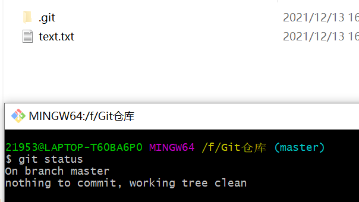
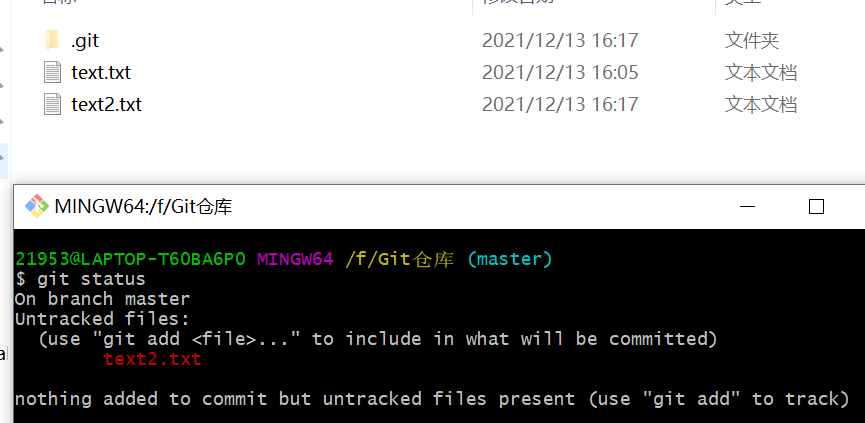
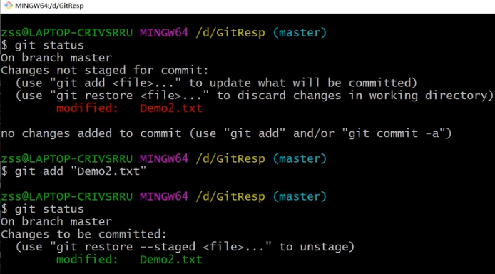
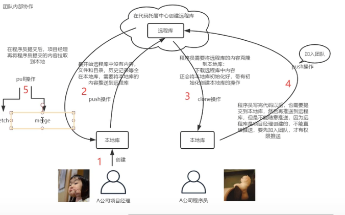
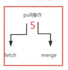

git常用命令 2021，12.13
staus
查看本地库文件夹中是否有文件没被提交
- 
没有需要提交的文件
- 
有一个文件（text.txt）没有被add
更改后的文件要重新提交，然后重新push到远程仓库

log
- "git log"命令可以让我们查看提交的，显示从最近到最远的日志

- 当历史记录过多的时候，查看日志的时候，有分页效果，分屏效果，一页展示不
下一页:空格 上一页:b
到尾页了，显示END
- "git log --oneline""git log --pretty=oneline""git reflog"能简洁的展示日志
git remote
- get remote用来给远程仓库起别名，方便上传或下载
- “git remote -v”查看已有别名
- “git remote add xmzhhh https://github.com/xmzhhh/xmzhhh.github.io.git”命令给远程库起别名
git push
- "git push xmzhhh(远程仓库别名) master（本地仓库分支）"命令将本地库的某分支提交到远程库
git clon
- "git clon https://github.com/xmzhhh/xmzhhh.github.io.git（远程库地址）"命令将远程库克隆到当前文件夹成为一个本地仓库
- 克隆操作可以帮我们：
- 初始化本地仓库
- 将远程库内容完整的克隆到本地
- 替我们创建远程库的别名
git 拉取

- 远程库被修改后要拉取远程库到本地库
- “git fetch origin master”命令抓取
- "git checkout origin/master""cat ***"去查看修改的对不对
- “git checkout master”回到当前目录“git merge origin/master”命令合并
- pull实际上是fetch与merge
- "git pull xmzhhh master"可以一步到位，直接拉取合并